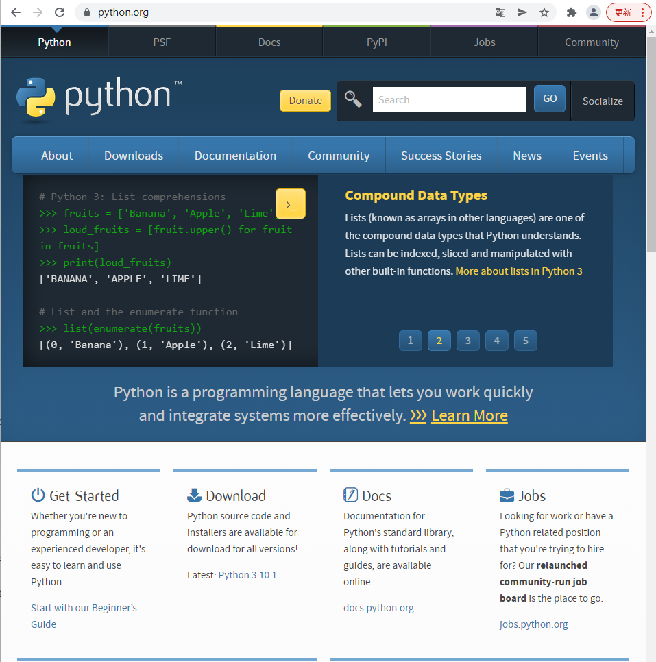
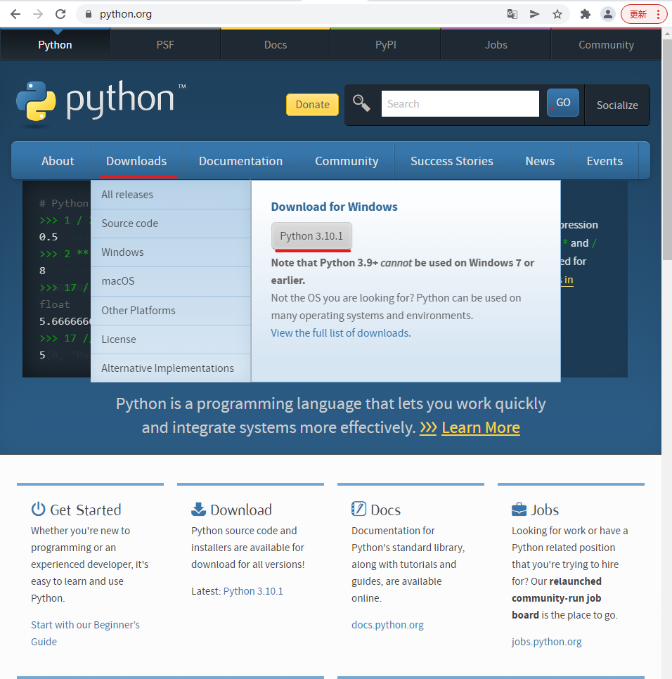
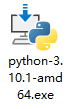
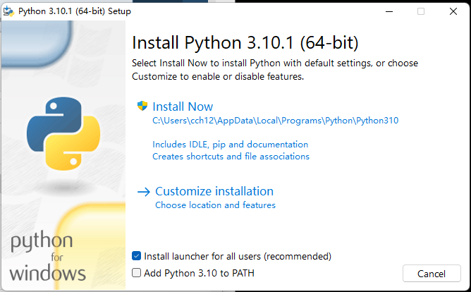
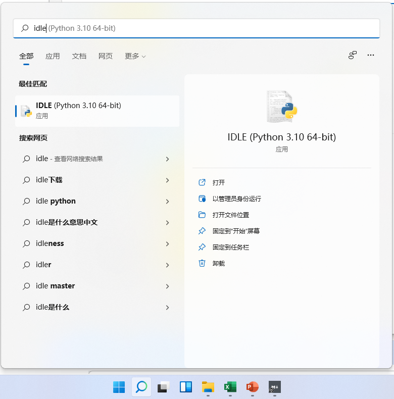
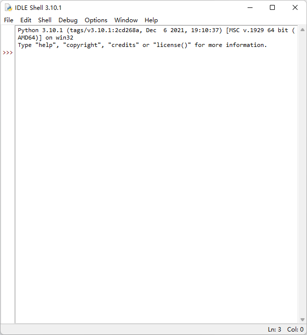
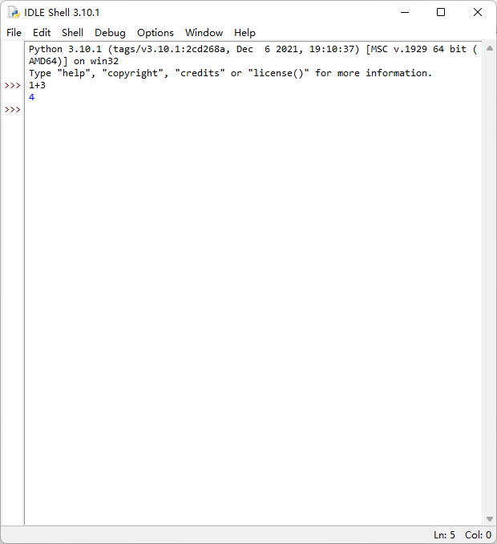
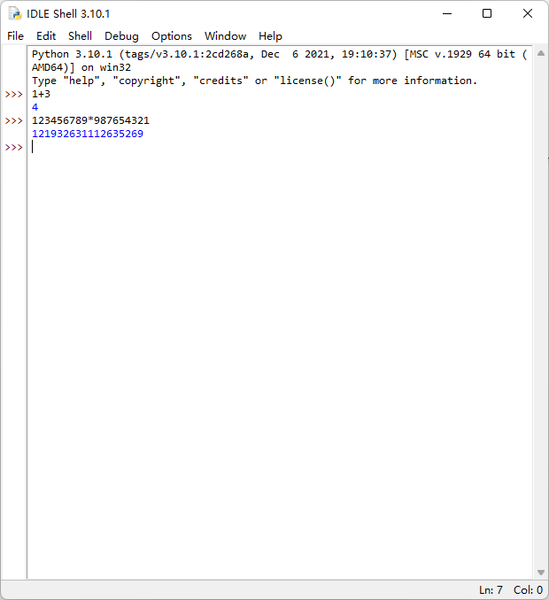
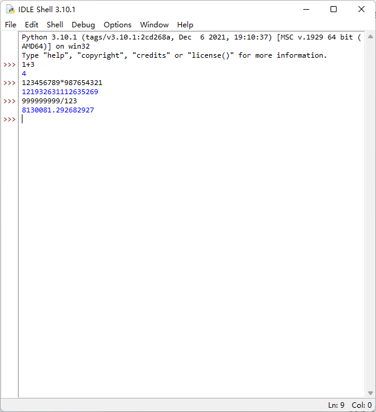
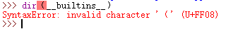

零基础入门学习Python
[一] 初识Python
1.1 什么是python
Python由荷兰数学和计算机科学研究学会的吉多·范罗苏姆 于1990 年代初设计，作为一门叫做ABC语言的替代品。
Python提供了高效的高级数据结构，还能简单有效地面向对象编程。Python语法和动态类型，以及解释型语言的本质，使它成为多数平台上写脚本和快速开发应用的编程语言， 随着版本的不断更新和语言新功能的添加，逐渐被用于独立的、大型项目的开发。
Python解释器易于扩展，可以使用C语言或C++（或者其他可以通过C调用的语言）扩展新的功能和数据类型。Python 也可用于可定制化软件中的扩展程序语言。Python丰富的标准库，提供了适用于各个主要系统平台的源码或机器码。——百度百科
python是一种高级动态解释型编程语言，其庞大的标准库，可以帮助处理各种工作，包括正则表达式、文档生成、单元测试、线程、数据库、网页浏览器、CGI、FTP、电子邮件、XML、XML-RPC、HTML、WAV文件、密码系统、GUI（图形用户界面）、Tk和其他与系统有关的操作。这被称作Python的“功能齐全”理念。除了标准库以外，还有许多其他高质量的第三方库，如wxPython、Twisted和Python图像库等等。
Python是一种代表简单主义思想的语言。阅读一个良好的Python程序就感觉像是在读英语一样。它使你能够专注于解决问题而不是去搞明白语言本身。Python极其容易上手，而且Python写成的代码风格清晰划一、强制缩进，是的代码易读、易维护。
但是，世界上没有完美的事物，Python还是有缺点的
运行速度慢：这里是指与C和C++相比。Python开发人员尽量避开不成熟或者不重要的优化。一些针对非重要部位的加快运行速度的补丁通常不会被合并到Python内。所以很多人认为Python很慢。不过，大多数程序对速度要求不高。在某些对运行速度要求很高的情况，Python设计师倾向于使用JIT技术，或者用使用C/C++语言改写这部分程序。可用的JIT技术是PyPy。
对于Python的简单易学，下面来举个栗子：
C++实现在控制台中打印"hello world"：
#include <iostream>
using namespace std;
int main() {
cout << "hello world" << endl;
return 0;
system("pause");
}C实现在控制台中打印"hello world"：
#include <stdio.h>
int main() {
printf("hello world");
}java实现在控制台中打印"hello world"：
public class HelloWorld {
public static void main (String[] args) {
System.out.println("hello world");
}
}而Python实现在控制台中打印"hello world"只需要一行代码：
print("hello world")肥肠的简洁明了。
接下来，就让我们进入Python的学习吧！
1.2 Python的环境配置
任何一门编程语言运行时都必须要其语言的编译器，因为人写的代码机器直接是读不懂的，需要有一个”翻译器“，将人写的代码转化为机器所能读懂的代码。
配置Python的环境很简单，首先先进入Python的官网：https://www.python.org/

（官网的首页图片）
接下来，点击界面中间一栏中的Downloads（下载）字样，选择Python 3.10.1，点击下载安装包。

注意：如果你使用的是手机/平板，请在电脑端操作。
若您的操作系统为Windows10以下（如Windows7），请点击https://www.python.org/ftp/python/3.8.10/python-3.8.10-amd64.exe下载安装包。
等待下载完成后，打开下载文件夹，双击刚刚下载的文件名包含"python"的安装包文件（.exe），弹出下面窗口：
将下方选项”Add Python ... to PATH“给勾上，点击"Install Now"：

等待安装完成，退出。
按下”开始“按钮，输入"IDLE"，回车，就可以进入Python环境自带的编辑器了：


大家可以做第一个尝试：输入"1+3"，回车：

Python给我们的反应很迅速啊，再输入”123456789*987654321“，回车：

再尝试输入999999999/123，回车：

使用Python做数学运算很简单。但是计算机被开发出来的最初目的就是为了帮助人们计算，所以一门编程语言可以进行数学运算并不足以为奇。在下一章，我会教大家使用Python做出一些并不简单的事情。
课后题：
1.回忆Python环境的配置。
2.Python内置的编辑器叫什么？[二]、入手
2.1 print()函数
一个完整的程序，必须要经过输入-->处理-->输出。在上一节，我们在 “IDLE” 中的“交互模式”（IDLE Shell）（“Shell”的意思为“壳”，可以实现输入后直接运行输出，像Windows中的黑乎乎的窗口的命令提示符cmd，就是一个Shell）进行了数学运算。但是，在IDLE中的交互模式里，显示出来的计算结果并不是真正意义上的“显示”，而是数学计算后的“返回值”。“返回值”是什么不重要，只要知道“返回值”在程序运行时并不会直接显示到屏幕上，而IDLE的交互模式中会显示“返回值”，只是为了我们更方便学习。
接下来，让我们学习如何在Python中实现“真正的显示”。
我们会用到一个内置函数（BIF），print()。
何为 FBI（划掉）BIF？BIF为 ”Built-in Functions“，即内置函数的意思。内置函数可以方便程序员快速编写脚本程序，而提供的现成的函数，直接调用即可。Python给我们提供了许多的 BIF，我们在IDLE中输入 dir(__builtins__)，可以看到Python提供的内置函数列表：
>>> dir(__builtins__)
['ArithmeticError', 'AssertionError', 'AttributeError', 'BaseException', 'BlockingIOError', 'BrokenPipeError', 'BufferError', 'BytesWarning', 'ChildProcessError', 'ConnectionAbortedError', 'ConnectionError', 'ConnectionRefusedError', 'ConnectionResetError', 'DeprecationWarning', 'EOFError', 'Ellipsis', 'EnvironmentError', 'Exception', 'False', 'FileExistsError', 'FileNotFoundError', 'FloatingPointError', 'FutureWarning', 'GeneratorExit', 'IOError', 'ImportError', 'ImportWarning', 'IndentationError', 'IndexError', 'InterruptedError', 'IsADirectoryError', 'KeyError', 'KeyboardInterrupt', 'LookupError', 'MemoryError', 'ModuleNotFoundError', 'NameError', 'None', 'NotADirectoryError', 'NotImplemented', 'NotImplementedError', 'OSError', 'OverflowError', 'PendingDeprecationWarning', 'PermissionError', 'ProcessLookupError', 'RecursionError', 'ReferenceError', 'ResourceWarning', 'RuntimeError', 'RuntimeWarning', 'StopAsyncIteration', 'StopIteration', 'SyntaxError', 'SyntaxWarning', 'SystemError', 'SystemExit', 'TabError', 'TimeoutError', 'True', 'TypeError', 'UnboundLocalError', 'UnicodeDecodeError', 'UnicodeEncodeError', 'UnicodeError', 'UnicodeTranslateError', 'UnicodeWarning', 'UserWarning', 'ValueError', 'Warning', 'WindowsError', 'ZeroDivisionError', '__build_class__', '__debug__', '__doc__', '__import__', '__loader__', '__name__', '__package__', '__spec__', 'abs', 'all', 'any', 'ascii', 'bin', 'bool', 'breakpoint', 'bytearray', 'bytes', 'callable', 'chr', 'classmethod', 'compile', 'complex', 'copyright', 'credits', 'delattr', 'dict', 'dir', 'divmod', 'enumerate', 'eval', 'exec', 'exit', 'filter', 'float', 'format', 'frozenset', 'getattr', 'globals', 'hasattr', 'hash', 'help', 'hex', 'id', 'input', 'int', 'isinstance', 'issubclass', 'iter', 'len', 'license', 'list', 'locals', 'map', 'max', 'memoryview', 'min', 'next', 'object', 'oct', 'open', 'ord', 'pow', 'print', 'property', 'quit', 'range', 'repr', 'reversed', 'round', 'set', 'setattr', 'slice', 'sorted', 'staticmethod', 'str', 'sum', 'super', 'tuple', 'type', 'vars', 'zip']
>>> 注意：从现在开始，在IDLE中输入的符号必须是英文符号，否则会报错：
在IDLE中输入
dir（__builtins__），回车，看看会发生什么：
IDLE显示红色的内容，说明这条代码有错误，无法执行。想一想，为什么会报错？
因为这条代码中的两个括号均使用了中文括号
（），应使用英文括号()。为了使中文符号和英文符号更容易区分，这里建议调整一下字体：Options-->Configure IDLE，在左侧的字体栏中选择"Consolas"，点击"OK"即可。
这样，字体就调整完成了。总之，中文符号和英文符号的区别更大了。


其中，print()就是一个BIF。
print()的原型是这样的：
print(value, ..., sep=' ', end='\n', file=system.stdout, flush=False)
括号里的许多参数我们暂时不用管，只用知道print()函数可以用来在屏幕上显示括号里的内容：
>>> print("这里填入需要打印（在这里，打印的意思是显示在屏幕上）的内容")
这里填入需要打印（在这里，打印的意思是显示在屏幕上）的内容
>>> print(3.14*2)
6.28
>>> 注意：打印字符串（就是一串字符，可以是符号、汉字、字母、数字）时，必须用一对单引号或是双引号括起来。
我们可以在括号里填入许多个内容，使用逗号隔开（这时会在文字与文字间添加一个空格）：
>>> print("大家好，", "我正在使用", "print()", "函数", "进行打印。")
大家好， 我正在使用 print() 函数 进行打印。
>>> 至于这样做有什么意义，我们将在”变量“这一节讲解。
课后题：
1.BIF是什么意思？
2.BIF有什么意义？
3.print()函数有什么作用？
4.print()的小括号里需要填写什么？2.2 变量
有时候，我们需要储存一些信息，比如我方角色剩余的生命值、场上还有几个敌方、你选择的角色名等等。这些数据必须都可以更改，比如受到攻击后我方的生命值需要减少，这时就需要使用“变量”来进行储存。
变量是计算机语言中能储存计算结果或能表示值的抽象概念。
在Python中，定义变量使用下面语法：
变量名 = 变量值举个栗子：
>>> number = 10
>>> 没有消息就是好消息，这说明我们的变量已经成功的创建了。接下来，输入print(number)打印刚刚创建的变量：
>>> number = 10
>>> print(number)
10Python返回了10，这正是我们想要的结果。
尝试存储一些新的东西：
>>> a = "hello"
>>> b = 3.14
>>> c = a
>>> d = -12345
>>>
>>> print(a, b, c, d)
hello 3.14 hello -12345
>>> 变量，求的是量可以改变，在Python中，改变变量的值可以将此变量重新赋值：
>>> a = "old value"
>>> print(a)
old value
>>> a = "new value"
>>> print(a)
new value
>>> 也可以用同样的方法操作数字类型的变量：
>>> num = 1
>>> print(num)
1
>>> num = num + 1
>>> print(num)
2
>>> 注意：num = num+1 可以简写成为 num += 1。
你学会了吗？
课后题：
1.变量是什么？举两个变量的应用例子。
2.如何创建变量？
3.补全下面代码，实现打印num*3的结果。（num初始值为5）__①__ 5
print(num _②_)2.3 输入
任意一个程序都必须满足输入-->处理-->输出，这在前面讲过。现在，进行简单的处理以及输出已经学过了。接下来，我们将学习Python如何进行输入。
首先来看执行输入所要用到的BIF：input()。
input()函数接受一个参数：输入前先打印的内容，返回用户输入的内容。
输入时，用户通过换行符进行终止输入。
话不多说，直接上IDLE：
>>> text = input("输入些什么吧：")
输入些什么吧：你好，这些输入的内容将被储存到变量text当中。
>>> print(text)
你好，这些输入的内容将被储存到变量text当中。
>>> 现在想实现这样一个程序：用户连续输入两次数字，程序打印这两个数字相加的结果，想一想，如何实现？
现在需要完成一个完整的程序，所以仅仅使用IDLE的交互模式是不够的，我们需要新建一个文件，在文件里写代码：
先点击IDLE上方栏中的 File --> New File，打开一个新的窗口。


思考并尝试一下在这个窗口中写一些Python代码。
举个栗子：
a = "hello world"
print(a)
输入后，点击上方栏中的 Run-->Run Module，点击确定保存。


可以看见，程序跑起来了，成功打印“hello world”。

接下来，思考一下，如何实现用户连续输入两次数字，程序打印这两个数字相加的结果？
num1 = input("输入第一个数字：")
num2 = input("输入第二个数字：")
print(num1 + num2)可以这样写吗？尝试一下。

可见，程序并没有报错，但是程序却将两次输入的内容给直接“拼”在一起了。为什么会这样？
这就联系到了“数据类型”这一概念。
Python中有4种数据类型，分别为 int（整型，就是整数）、float（浮点型，小数）、str（字符串）、bool（布尔值，真True或假False）。
而input()接收到的数据只能是str（字符串）类型。这时候，就必须将字符串转化为整型。
python提供了一个BIF来进行字符串-->整型的转换：int()。
int()函数的小括号里填入一个数据，返回填入的数据转换后的整型值。所以我们刚刚写的小程序需要这么改：
temp1 = input("输入第一个数字：")
num1 = int(temp1)
temp2 = input("输入第二个数字：")
num2 = int(temp2)
print(num1 + num2)其实，前四行代码中的temp1和temp2可以不要，直接使用int()把input()包起来，简化为：
num1 = int(input("输入第一个数字："))
num2 = int(input("输入第二个数字："))
print(num1 + num2)这下，程序终于成功运行了。
===================== RESTART: C:/Users/cch12/Desktop/01.py ====================
输入第一个数字：5
输入第二个数字：6
11
>>> 课后题：
1.在Python中，输入使用哪个BIF？
2.Python中有几种数据类型？
3.请新建一个Python文件，编写代码实现以下功能：
分别输入两个数字，分四次输出这两个数字相加、减、乘、除的结果。[三]、分支与循环
3.1 第一个小游戏
接下来，我么要实现一个小游戏。大家先打开IDLE，新建一个文件，输入以下代码：
# 输入一个数字，并将其存储到answer变量中
answer = int(input("猜一个1~10的数字："))
# 判断输入的数字是否为正确答案：
if answer == 8:
print("猜对了！答案就是8！")
# 否则打印“猜错了”
else:
print("猜错了！正确答案其实是8！")点击 Run-->Run Module 运行程序，试玩一下刚刚编写的小游戏，并猜测一下每条语句的意义。
我们可以在上面的代码中看到有些语句前面加了四个空格，这就是Python的特色：缩进。
和其它程序设计语言（如 Java、C 语言）采用大括号“{}”分隔代码块不同，Python 采用代码缩进和冒号（ : ）来区分代码块之间的层次。
上面的案例中，
print("猜对了！答案就是8！")这条语句前面加了一个缩进，这说明这条语句属于前一条if answer == 8:。在IDLE中，在适当的位置输入冒号，换行，IDLE就会自动为你插入一个缩进。
这是运行结果：
===================== RESTART: C:\Users\cch12\Desktop\02.py ====================
猜一个1~10的数字：5
猜错了！正确答案其实是8！
>>> 接下来，我们将学习这篇代码的意义。
3.2 注释
大家在上面的代码中有没有看到有两行文字前加了一个井号（#），文字还变绿了，尝试改变井号（#）后面的文字，再运行，看看输出结果有没有变化。
没有？没有就对了，这说明井号（#）后面的文字计算机是不会执行的，是专门给人看的，这就叫代码的注释。
Python的注释可以放在某条代码的上方，也可以放在与代码同行的地方。举个栗子，上面的代码的注释也可以修改成这样：
# file_3_1.py
answer = int(input("猜一个1~10的数字：")) # 输入一个数字，并将其存储到answer变量中
if answer == 8: # 判断输入的数字是否为正确答案：
print("猜对了！答案就是8！")
else: # 否则打印“猜错了”
print("猜错了！正确答案其实是8！")也许这样写注释看得更清晰，因为它将代码与注释分开了。
Python同样支持多行注释，其语法为：
"""
注释内容
注释内容
"""
# 或者
'''
注释内容
注释内容
'''使用三个双引号或单引号包裹起来的注释内容，叫做多行注释。多行注释允许将注释写在许多行中。这在程序的开头描述程序的作用时很有用。
3.3 条件分支
在3.1的代码中我们可以看到有这么一行语句：if answer == 8:。这是一个条件判断，if 后跟上一个返回布尔值（True或False，真或假）的条件，如果后面的条件返回了True（成立），则执行 if 语句所属的带有缩进的语句。
若条件为假，则执行 else 所属的带有所进的语句。注：if 后面并不是必须要有 else，但是 else 必须前面有 if。
下面是Python中 if--else 条件分支语句的语法：
if 条件:
条件为真时执行的代码
else:
条件为假时执行的代码再回过头来看看3.1中的代码，代码会判断用户输入的数字是否为8，如果成立，则打印“猜对了”，否则打印“猜错了，正确答案是8”。
注意：Python中，给变量赋值使用一个等号（
=），而判断两值是否相等使用两个等号（==），一定不能搞混。
3.4 elif 的使用
下面来实现这样一个程序：用户输入分数（0~100），程序返回该分数的等级：
- 等级A：100~90分
- 等级B：90~80分
- 等级C：80~60分
- 等级D：60~0分
# file_3_2.py
score = int(input("输入分数："))
if 100 >= score >= 90:
print("A")
if 90 > score >= 80:
print("B")
if 80 > score >= 60:
print("C")
if 60 > score >= 0:
print("D")
if score < 0 or score > 100:
print("输入有误！")这是一种方法，但是如果用户输入了100，第一个判断成立，但是程序还会继续判断等级B、C、D、输入有误，占用CPU时间。如何让程序一旦判断出分数后，就立刻退出？有方法，使用 else：
# file_3_2.py
score = int(input("输入分数："))
if 100 >= score >= 90:
print("A")
else:
if 90 > score >= 80:
print("B")
else:
if 80 > score >= 60:
print("C")
else:
if 60 > score >= 0:
print("D")
else:
print("输入有误！")其实上面的代码还有简写形式：elif：
# file_3_2.py
score = int(input("输入分数："))
if 100 >= score >= 90:
print("A")
elif 90 > score >= 80:
print("B")
elif 80 > score >= 60:
print("C")
elif 60 > score >= 0:
print("D")
else:
print("输入有误！")3.5 while 循环
Python 的 while 循环的语法与 if 条件分支类似，不同的是，while 循环后面的条件只要为真，while 循环就会一直重复执行其所属的代码，这段代码被称为循环体。
while 循环的语法如下：
while 条件:
循环体接下来想一想，如何实现计算1+2+3+4+...+100的和？这是程序的实现逻辑：
- 首先需要有一个变量，来存储相加后的和；
- 还得有另一个变量，储存下一次该加上几了，这个数字应该从1开始，每次循环时要把和增加这个变量，在最后还要把这个变量+1；
- 必须有循环，循环的条件是每次增加的值 小于或等于 100；
- 在最后，必须要打印出计算结果。
已经想明白程序该如何实现了，接下来就是将上面的文字转化为代码：
# file_3_3.py
sum = 0 # 这个是相加后的和
i = 1 # 这个是每次增加的数字
while i <= 100: # 循环：条件为 每次增加的值 小于或等于(<=) 100
sum += i # 每次将和增加i（sum += i 是 sum = sum + i 的简写形式）
i += 1 # i每次增加1
print("最终结果为：", sum)# 输出最终结果输出结果为：
===================== RESTART: C:\Users\cch12\Desktop\file_3_3.py.py ====================
最终结果为： 5050
>>> 程序是如何执行的呢？请看下面的动图：

3.6 for 循环
接下来来谈谈Python里的 for 循环。和 while 循环一样，基本上每个编程语言里都有一个 for 循环，但是Python的for循环却更为简易、智能和强大！
for 循环的语法如下：
for 变量 in 可迭代对象:
循环体所谓可迭代对象，就是指每个元素都可以被单独提取出来的对象，如字符串就是一种可迭代对象，像”hello“就是由”h“，”e“，”l“，”l“，”o“五个字符组成的。
for 循环每执行一次，变量将被设定为可迭代对象的下一个元素。例如 “hello world”，第一次循环 i = "h"，第二次 i = "e"，第三次 i = "l"，第四次 i = "l"，第五次 i = "o"。
以动图的形式展现下：

明白了吗？
这时，使用 for 循环实现 1+2+3+...+99+100，可以这样写吗？
# file_3_4.py
s = 0
for i in 100:
s += i
print(s)保存运行，IDLE 就给出了报错：
================ RESTART: C:\Users\cch12\Desktop\file_3_4.py ================
Traceback (most recent call last):
File "C:\Users\cch12\Desktop\file_3_4.py", line 2, in <module>
for i in 100:
TypeError: 'int' object is not iterable当程序抛出错误，我们第一时间就是要看报错信息，分析 python 给我们写出的错误原因以及错误位置。
先看第一行，用等号（
=）包裹的是运行的文件名及其路径。第二行，
Traceback (most recent call last):Traceback中文意思为 “回溯”，括号里的意思为 “最近一次的最后调用”。这行文字其实并没有什么作用，可以在每个报错中见到；第三行，
File "C:\Users\cch12\Desktop\file_3_4.py", line 2, in <module>，指出了具体报错的位置，在那个文件中的哪一行。这个非常有用；第四行，
for i in 100:，指出了具体产生错误的一行的代码，这个非常有用；第五行，
TypeError: 'int' object is not iterable，指出了错误原因。这个最重要。
接下来分析报错原因。Python 给我们说的很清楚，告诉我们：“类型错误：”int“ 对象不是一个可迭代对象”。对，int 就是整数，整数不可以被单独提取出来。这时候，就要用到另外一个 FBI：range() 函数。
range() 函数具体怎么用呢？可以让 Python 自己告诉我们：
>>> help(range)
Help on class range in module builtins:
class range(object)
| range(stop) -> range object
| range(start, stop[, step]) -> range object
|
| Return an object that produces a sequence of integers from start (inclusive)
| to stop (exclusive) by step. range(i, j) produces i, i+1, i+2, ..., j-1.
| start defaults to 0, and stop is omitted! range(4) produces 0, 1, 2, 3.
| These are exactly the valid indices for a list of 4 elements.
| When step is given, it specifies the increment (or decrement).
|
| Methods defined here:
|
| 太长...省略
|
| ----------------------------------------------------------------------
| Static methods defined here:
|
| __new__(*args, **kwargs) from builtins.type
| Create and return a new object. See help(type) for accurate signature.
|
| ----------------------------------------------------------------------
| Data descriptors defined here:
|
| start
|
| step
|
| stop简单翻译一下：
class range(object)
| range(stop)--> 返回range对象
| range(start, stop[, step]）-> 返回range对象
|
|
| 返回一个对象，该对象逐步生成从开始（包含）到停止（独占）的整数序列。
| 范围（i，j）产生i，i+1，i+2...，j-1。
| 起始默认为0，停止并不算入返回对象中。range(4)产生(0, 1, 2, 3)。
| 这些正是4个元素列表的有效索引。
| 当给定步长时，它指定增量（或减量）.
|
| 此处定义的方法：
| 太长...省略
|
| ----------------------------------------------------------------------
| 此处定义的静态方法：
|
| __new__(*args,**kwargs)来自 builtins.type。
| 创建并返回一个新对象。有关准确的描述，请键入 help(type)。
|
| ----------------------------------------------------------------------
| 此处定义的数据描述符：
| start
| step
| stop...看不懂？简单阐述以下用法。
range() 函数有两个原型：
range(stop)
range(start, stop[, step])其实可以看做三种：
range(stop)
range(start, stop)
range(start, stop, step)range() 函数返回 从 start 开始，到 stop 结束（不包含stop），步长为 step 的递增（或递减） 的 range 对象。
若 start 不填，则默认为1；若 step 不填，则默认为 1。
注：range() 函数返回的 range 对象也是可迭代对象。
我们可以使用
list()函数显示出 range 函数返回的对象：
>>> list(range(5))
[0, 1, 2, 3, 4]
>>>
>>> list(range(3, 8))
[3, 4, 5, 6, 7]
>>>
>>> list(range(3, 10, 2))
[3, 5, 7, 9]注：list 是一种数据类型，它可以使数据像表格一样存放。
使用 list() 函数可将可迭代对象转化为 list 类型。
有了这个“帮手”，这样就可以很轻松地使用 for 循环语句实现计算 1+2+3+...+99+100 的和了：
# file_3_4.py
s = 0
for i in range(1, 100+1):
s += i
print(s)range() 这里 stop 处填写 100+1，是因为 range() 函数“骨头不顾尾”，返回对象时并不会算上stop。
运行下，结果如下：
================ RESTART: C:\Users\cch12\Desktop\file_3_4.py.py ================
5050
>>>3.7 break 语句
难道 while True 和莫名奇妙的 for i in range(10000000000000000000) 只有拔电源才能解决吗？其实不然。有一种方法，可以结束循环。它就是 break 语句。
发现了吗？今天新见的 break ，它不是函数，没有小括号；它也不是变量，因为你无法 print 它。它是一个语句，而且什么也不用传入，它的作用就是跳出循环。
还是计算 1+2+3+...+99+100，如果哪一天你忽然忘了 for 循环怎么用，还忘了 while 循环是执行到条件为真还是假（应该不会），这时就可以用得上 break 语句：
# file_3_5.py
s = 0
i = 1
while True:
# 判断i是超过了100
if i > 100:
break
else:
s += i
i += 1
print(s)怎么样？虽然变复杂了，但是还是有些用的。break 语句的真正用途在这里：
要求实现输出2022年以后出现的第一个闰年，该如何实现？
注：闰年规则：
不能被100整除（能被400整除算世纪闰年）；
可以被4整除
整理一下程序逻辑：
有一个变量，用于储存年份；
# file_3_6.py
year = 2022接下来是循环。这里使用 while 循环，因为我们并不能确定在那个范围内会出现闰年：
先判断年份能否被 4 整除（这里用了 % 运算符，% 的意思是取余，返回两数相除的余数），如果可以，则再判断是否能被 100 整除，若不能整除，则打印年份，并退出循环；
# file_3_6.py
year = 2022
while True:
if year % 4 == 0:
if year % 100 != 0:
print(year)
break现在还有一个条件没有定义，就是年份能被 400 整除还没有写。
而这个判断，需要写在 if year % 100 != 0: 下面的 elif：
# file_3_6.py
year = 2022
while True:
if year % 4 == 0:
if year % 100 != 0:
print(year)
break
elif year % 400 == 0:
print(year)
break最后注意写上 year += 1 ，否则进入死循环：
# file_3_6.py
year = 2022
while True:
if year % 4 == 0:
if year % 100 != 0:
print(year)
break
elif year % 400 == 0:
print(year)
break
year += 1运行结果：
================ RESTART: C:\Users\cch12\Desktop\file_3_6.py ================
2024
>>>3.8 continue 语句
continue 语句的作用是：终止本次循环并开始下一轮循环。注意：在开始下一轮循环之前，会先测试循环条件。
还是举个栗子，打印 2020——2050 的所有闰年，就可以使用 continue 语句：
# file_3_7.py
for year in range(2022, 2051):
# 把上面写的代码搬过来，再稍作修改
if year % 4 == 0:
if year % 100 != 0:
print(year)
# 需要把 break 改成 continued
continue
elif year % 400 == 0:
print(year)
# 这里也是
continue运行结果：
================ RESTART: C:\Users\cch12\Desktop\file_3_7.py.py ================
2024
2028
2032
2036
2040
2044
2048
>>> [四]、数据类型与运算
4.1 数据类型
有关 Python 的数据类型，我们之前也提到过。接下来就给大家详细介绍以下常用的数据类型：
字符串（str）
字符串，是一串字符拼在一起的类型，由一对双引号或单引号包裹。它是可迭代对象。字符串可以使用加号（
+）拼接：>>> "hello" + "world" 'helloworld' >>>字符串可以被一对双引号或单引号包裹，但是不能一边双引号，一边单引号：
>>> "hello' SyntaxError: unterminated string literal (detected at line 1)如果字符串内必须有单引号呢？可以将包裹字符串的引号改为双引号：
>>> print("Let's Go!") Let's Go! >>>那如果字符串内既有双引号，又有单引号？这时需要使用转义字符。
所谓转义字符，就是在某个字符前增加一个反斜杠（\），就可以使这个字符具有特殊意义或者消除特殊意义：
>>> print("这是单引号：\' 这是双引号：\"") 这是单引号：' 这是双引号：" >>>有时候，反斜杠会带来麻烦：
>>> s = "D:\now\python310\python.exe" >>> print(s) D: ow\python310\python.exe >>>这并不是我们想要的结果，因为反斜杠+n（
\n）构成了换行符。有两种解决办法：使用原始字符串
原始字符串可以避免转义字符，在字符串前加 r 可以实现：
>>> print(r"D:\now\python310\python.exe") D:\now\python310\python.exe >>>转义反斜杠
没错，反斜杠转义反斜杠等于正常反斜杠：
>>> print("D:\\now\\python310\\python.exe") D:\now\python310\python.exe >>>
整型（int）
整型说白了就是平常说的整数。
>>> 123 + 456 579 >>> '123' + '456' '123456' >>>浮点数（float）
浮点数就是小数。注意：5.0 也是float。
>>> a = 0.00000000001 >>> print(a) 1e-11布尔类型（bool）
布尔类型只有两种值：True和False。
>>> 1 + 1 > 3 False >>> 3 + 8 == 11 True其实布尔类型还有另外一种表达：0为False，其他非零数均为True：
>>> if 0: ··· print("true") ··· else: ··· print("false") ··· ··· false >>> # ---------------------- >>> if 3: ··· print("true") ··· else: ··· print("false") ··· ··· true >>>
4.2 运算符
python 有以下的运算符：
| 符号 | 意义 |
|---|---|
| a+b | 符号两端的数相加 |
| a-b | 符号两端的数相减 |
| a*b | 符号两端的数相乘 |
| a/b | 符号两端的数相除，返回一个浮点数 |
| a//b | 返回符号两端的数相除的结果的整数部分，即舍弃小数点 |
| a**b | 返回a的b次幂 |
| a%b | 返回a÷b的余数 |
进入IDLE尝试一下：
>>> 3 + 2
5
>>> 3 * 5
15
>>> 9 - 0.5
8.5
>>> 3.0 + 2.0
5.0
>>> 8 / 2
4.0
>>> 10 / 3
3.3333333333333335
>>> 3**2
9
>>> 5**3
125
>>> 10//3
3
>>> 10%3
1
>>>同时，Python 还支持通过这种方法实现变量的运算：
>>> a = 5
>>> a += 1
>>> a
6
>>> # ----------------
>>> a
6
>>> a *= 2
>>> a
12
>>> # ---------------
>>> a
12
>>> a /= 3
>>> a
4.0
>>> #---------------
>>> a
4.0
>>> a **= 3
>>> a
64.0
>>> [五]、Turtle 画图
5.1 forward() 函数
Python 有一个内置库，叫做 turtle。这个库可以用来实现在电脑上使用代码作画。虽说大部分画图操作会比使用鼠标画图要困难，但是它可以更快速地完成高重复性的图案。
而使用 turtle 作画，第一个问题是：如何导入它？
在 Python 里，使用 import 语句导入库：
# 5_1.py
import turtle这时，就可以在下方编写画图程序了。
首先出场的是 turtle 库里的 forward() 函数。它可以指定画笔绘制一条线段，括号中填写绘制长度：
# 5_1.py
import turtle
# 直走100个像素
turtle.forward(100)